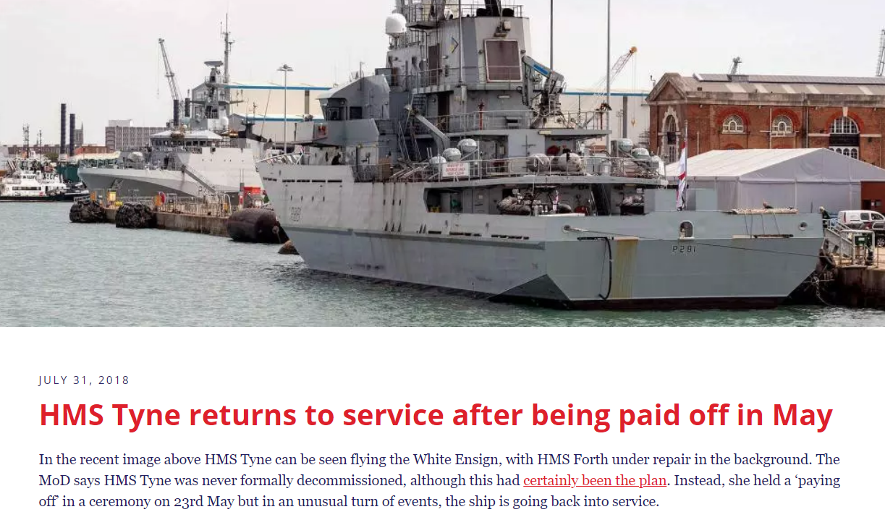
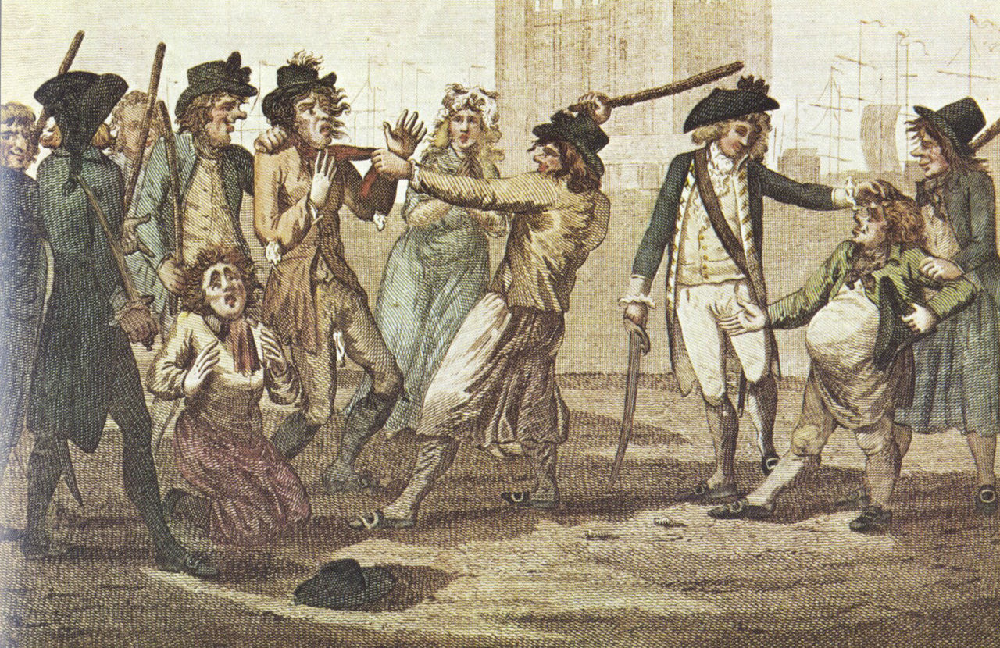
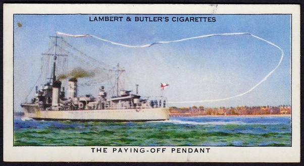
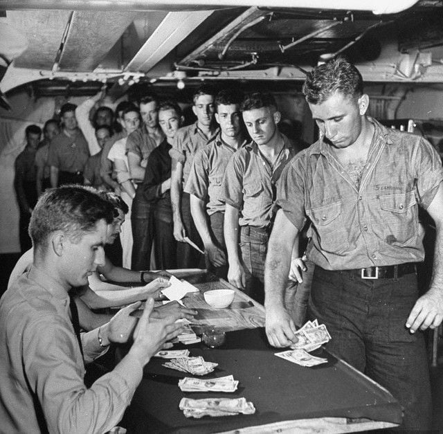
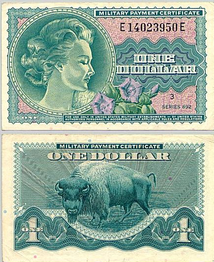

군함을 pay off 한다는 건 무슨 뜻일까?
게시: 2021-01-07T06:30:46+09:00
미국이나 영국 해군 관련 영문 기사를 읽다보면 pay off 라는 표현을 가끔 읽게 됩니다. '지불하고 끝내다' 라는 뜻의 이 표현은 대체로 다음 사진 속의 기사에서처럼, 군함에 사용될 때는 '퇴역시킨다' 라는 뜻으로 사용됩니다. 군함을 퇴역시키는데 대체 무슨 돈을 내길래 pay off라는 표현을 쓰는 것일까요 ?

이건 과거 영국 해군의 군함 운용 방식과 전통에서 비롯된 표현입니다. 근대 이전에는 원래 상비군이라는 것이 없었습니다만, 특히 해군의 경우에는 더욱 그랬습니다. 영국 해군 군함의 이름 앞에 붙는 HMS (His/Her Majestic Ship)이라는 호칭의 기원도, 해전을 위해 동원된 함대 내의 선박 중에서 민간 소유였다가 임시로 동원된 배와 원래부터 국왕 소유였던 배를 구분하기 위해 붙여졌던 이름입니다. 군대든 군함이든, 필요할 때만 병사들과 수병들을 긁어모아 운용했고, 전쟁이나 사건 등이 끝나면 비용을 아끼기 위해 해산시켰습니다. 이는 나폴레옹 시대에도 마찬가지였습니다. 영국 해군 군함도 마치 민간 무역선처럼, 어떤 특정 임무를 받아 항해에 나서게 되면 먼저 함장(captain)과 부관(lieutenant)들을 배정하고, 이들이 어떻게든 알아서 수병들을 긁어모으고 식량과 물, 무기와 탄약 등을 비축하여 출항을 했습니다. 수병 생활은 위험하고 힘들었으므로 많은 경우 이런 수병 모집에 자발적으로 지원하는 사람이 충분하지 않았습니다. 그래서 press gang이라고 하여, 항구나 바닷가 마을에서 장교들과 부사관들이 선원들을 강제로 징집(press)하기도 했습니다. 이때 꼭 원래 뱃사람만 잡아들이는 것이 아니라 장에 가던 농부나 술집에 있던 목동 등 그야말로 아무나 닥치는 대로 잡아들였습니다. 그래서 잡혀가는 사람들이 도망치지 못하도록 이들을 끌고 갈 때는 이들의 허리띠를 칼로 잘랐다고 합니다. 당시 바지는 헐렁하여 허리띠가 끊어지면 손으로 바지를 쥐어야 흘러내리지 않았던 것이지요. 이렇게 잡혀가는 집안 식구나 친구들을 구해내기 위하여 마을 사람들이 떼를 지어 이런 press gang을 습격하는 일도 종종 일어났습니다.

(Press gang을 묘사한 1780년대의 만화입니다.)
이렇게 잡혀간 수병들의 복무 기간은 임무를 마치고 귀항할 때까지였습니다. 그게 3달이건 1년이건, 군함이 임무를 마치고 귀항하면 수병들은 대부분 자유의 몸이 되었습니다. 좀더 정확하게 이야기하면 항구에서 하는 일 없이 빈둥거릴 때도 수병 급여를 주기 아까우니 제대를 시켜주는 것이었지요. 잠깐, 급여라고요? 예, 당연히 강제로 잡혀간 것이라고 해도 수병으로 복무를 했으니 급여를 주어야 합니다. 그런데 그 급여는 보통 모항에 귀항한 다음에 일시불로 지급하는 것이 일반적이었습니다. 이유는 몇가지가 있는데, 가장 큰 것은 당장 줄 돈이 없어서였고, 또 하나의 작지 않은 이유는 항해 도중에 들린 외국 항구에서 탈영하는 수병에게는 돈을 주지 않기 위함이었습니다. 이렇게 급여 지급을 귀항할 때까지 유예하는 관례는 1825년까지 계속되었다고 합니다. 아무튼 그래서 군함을 pay off 한다는 것은 귀항한 군함의 수병들에게 항해 기간 중 누적된 밀린 급여를 지불하고 해산시킨다는 뜻입니다.

(현대의 군함을 pay off 한다는 것은 이 군함을 퇴역시키고 고철로 scrap 처리를 하든 제3세계 국가에게 공여를 하든 하는 것을 뜻합니다. 위 그림은 paying-off pendant라는 엄청나게 긴 띠 형태의 깃발을 달고 퇴역식을 거행하는 군함의 그림입니다. 보통 paying-off pendant는 군함의 길이만큼 긴데, 거기에 현역으로 뛴 햇수만큼의 길이를 더하게 되어있답니다. 그래서 저렇게 긴 paying-off pendant를 달았다는 것은 그만큼 오래 현역으로 뛴 낡은 군함이라는 뜻입니다.)
이렇게 paid off 된 군함은 일단은 그냥 항구에 하는 일 없이, 뱃바닥에 꾸준히 새는 물을 펌프질로 퍼내고 각종 삭구들을 훔쳐가는 좀도둑을 막을 최소한의 수병들, 즉 skeleton crew를 제외하고는 빈 배로 묶여 있게 됩니다. 이런 군함은 in ordinary 상태, 그러니까 일종의 예비함 상태로 들어간다고 표현합니다. 여기서 in ordinary 상태라는 것은 영국 해군이 군함에 소요되는 비용 상태를 3가지 상태로 구분했던 것에서 비롯된 표현입니다. "Ordinary" (보통) : 항구에서 일반적인 최소 유지보수 비용을 필요로 하는 상태 "Sea Service" (현역) : 당장 임무에 투입되도록 수병들과 장비를 갖춘 상태 "Extraordinary Repair" (특별 수리) : 대대적인 수리나 개장 비용을 필요로 하는 상태 갑자기 이런 내용의 포스팅을 올리게 된 것은 최근에 "CARRIERS"라는 페이스북 그룹에서 아래 사진을 보았기 때문입니다.

(어느 군함인지는 모르겠으나 아무튼 미해군의 pay day입니다.) 적어도 19세기 후반부터는 구미 각국은 상비군 제도를 운용했으므로, 군함이 임무를 마치고 귀항한 뒤에도 수병들을 pay off 라는 이름으로 내쫓지 않고 계속 군적을 유지시키고 급여를 주었습니다. 따라서 급여도 2주일에 1번씩 저렇게 함상에서 꼬박꼬박 현금으로 주었다고 합니다. 저 사진을 보고, 저는 망망대해 위에서 저렇게 현찰로 급여를 지급하는 것이 무슨 의미가 있는지 궁금했습니다. 어차피 돈을 쓸 곳도 없는데 괜히 도난의 위험이 있는 현금을 가지고 있는 것이 수병에게 도움이 될 것 같지 않았거든요. 그런데 주로 퇴역 해군 할배들이 잔뜩 포진한 그 페이스북 그룹에 그런 질문을 올렸더니 다음과 같은 답변들이 달렸습니다. 1) Liberty call (항구에서의 외출) : 사세보든 암스테르담이든 기항지에 내려서 술집 등으로 놀러나갈 때 달러 현찰을 써야 합니다. 2) Games of chance (도박) : 바다 위에서 남는 시간에 수병들끼리 할 일이... 3) PX : 큰 항공모함 같은 큰 군함에는 PX도 있고, 거기서는 현찰로 물건을 사야합니다. 4) 빚 : 어떤 이유로든 동료에게 꿨던 돈을 갚아야 할 일이 있답니다. 그런데 이렇게 군함 안에서 현찰을 다루면 혹시 강도 절도 사건이 빈번하지 않았을까요? 글쎄요, 그래도 군대인데 설마 그런 일이 있었을까 싶습니다만, 그래도 안전을 위해 저렇게 현찰을 다루는 경리담당 부사관(paymaster)은 무장을 했다고 합니다. 페북에 어떤 양반이 달아 놓은 댓글을 보니, 1972년도에 자기가 E-5 (staff sergeant, 우리나라 계급으로 따지면 하사)로서 항모 USS JFK의 Deputy Paymaster 중 하나였는데, 현금을 다룰 때는 항상 45구경 권총으로 무장을 하고 있었다고 합니다. 다만 언제나 실탄은 장전하지 않은 빈총이었는데, 그 사실은 아무도 몰랐다고 합니다. 물론 수병 개인별로 바다 위에서 얼마 받고 나머지는 본국에 가서 받겠다고 선택할 수 있었다고 합니다. 다만 그렇게 적립해둔 월급에 이자는 붙지 않았기 때문에 인기가 많지는 않았답니다. 또 오일 쇼크가 있던 70년대에는 MPC (Military Payment Certificates)라는 일종의 수표(?) 같은 것을 현찰 대신 급여로 주었답니다. 이건 해당 항구의 미해군 사무소에 가야 현찰로 바꿀 수 있었는데, 이렇게 한 이유는 엄밀하게 이야기하면 육군이든 해군이든 미군이 주둔하는 나라의 현지 통화 안정을 위한 것이었다고 합니다. 보통 암시장에서는 공적 환율보다 더 높은 환율로 달러를 현지 화폐로 교환해주었는데, 미군 병사들이 그런 암시장 환율을 통해 부당한 이익을 취하는 경우가 많았고 그로 인해 저개발 국가 현지의 시장 환율에 영향을 주는 경우까지 있었기 때문이었습니다.

(1달러짜리 MPC입니다. 원칙적으로 허가되지 않은 민간인이 이 MPC를 소지하는 것은 불법이었으나, 실제로는 미군이 있는 지역의 현지 상인들은 이걸 달러처럼 유통했다고 합니다.)
기타 여러가지 댓글이 달렸는데, 어떤 사람은 자기 아버지가 제2차 세계대전 중에 (전에 제 블로그에서도 소개했던 미해군 경항모인) USS Cowpens에서 복무했는데, 전쟁 중 바다에 나가 있을 때는 급여를 받지 못했고 전쟁이 끝나고 브루클린 해군기지에 귀항한 뒤에야 일시불로 받을 수 있었다고 하시더랍니다. 그때 아버지가 밀린 급여를 지불받는 사무실에서 경리를 보던 여성을 만났는데, 그 분이 자기 어머니라고 하네요. 참 로맨틱한 이야기였습니다. Source : www.savetheroyalnavy.org/hms-tyne-returns-to-service-after-being-paid-off-in-may/
rusi-ns.ca/paying-off-hmc-ships-2/
www.quora.com/What-does-it-mean-when-a-ship-is-paid-off
en.wikipedia.org/wiki/In_ordinary